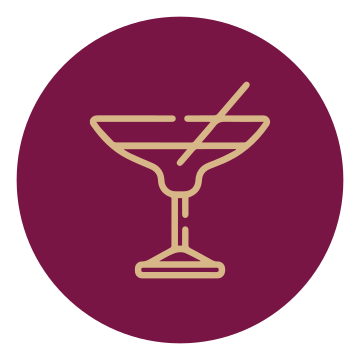

Taller de mixología con café sin alcohol
1 día
horas
¿Qué aprenderás?
Teoría
- Estarás actualizado con bebidas para cafetería, coctelería y bebidas sin alcohol.
- Conocerás los ingredientes que están de moda para crear bebidas funcionales.
- Conocerás 4 técnicas básicas para elaborar y presentar diferentes bebidas.
Práctica
- Aprenderás a establecer tus recetas, medir costos y desarrollar un menú más
rentable.
- Podrás experimentar diferentes sabores con ingredientes naturales y otros insumos
para tus clientes.
Temario
- Barras de especialidad en México
- Bebidas a base de café
- Bebidas a base de flores
- Bebidas funcionales e hidratantes
- Bebidas gasificadas
- Bebidas con leche y sustitutos
- Bebidas con alcohol
- Costo